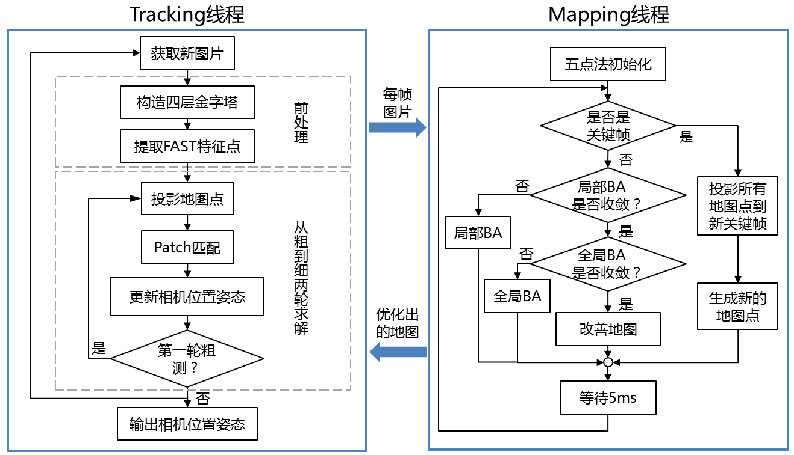

本系列文章旨在总结主流视觉SLAM算法的框架，对比各个算法在子模块的差异，最终提炼出融合各个算法优点的架构。
PTAM[1]是视觉SLAM领域里程碑式的项目。在此之前，MonoSLAM[2]为代表的基于卡尔曼滤波的算法架构是主流，它用单个线程逐帧更新相机位置姿态和地图。地图更新的计算复杂度很高，为了做到实时处理（30Hz），MonoSLAM每帧图片只能用滤波的方法处理约10~12个最稳定的特征点。PTAM最大的贡献是提出了tracking、mapping双线程的架构，tracking线程只需要逐帧更新相机位置姿态，可以很容易实现实时计算；而mapping线程并不需要逐帧更新，有更长的处理时间，原来只能用在离线SfM（Structure from Motion）的BA（Bundle Adjustment）也可以用起来。这种基于优化的算法比滤波法在单位计算时间可以得到更高的精度[3]。这种多线程的处理方式也更顺应现代CPU的发展趋势。之后的视觉SLAM算法几乎全部沿用了这一思想。

在tracking线程，地图（由地图点和关键帧组成）是已知且固定的。对图片构造金字塔的目的有两个：1）加快匹配；2）提高地图点相对于相机远近变化时的鲁棒性。FAST是常用的特征点，优点是快，缺点是不鲁棒。通常会先提取出大量的（成百上千个）FAST特征，然后用各种约束剔除误匹配。基于运动模型（PTAM选用减速模型，一般匀速模型更常见）假定当前帧的初始位置姿态，把地图点投影到当前帧，建立起当前帧和关键帧（每个地图点会关联第一次观察到它的关键帧）的联系。随后在匹配点附近找一块小区域（这就是所谓的patch），通过比较当前帧和关键帧的patch的相似度（计算SSD），可以剔除误匹配（值得注意的是，这里的patch匹配和直接法里的光流跟踪是不同的，这里只是单纯为了剔除误匹配，两帧的相对位置姿态是通过最小化重投影误差得到的）。为了去除观测位置姿态不同的影响，会在匹配前对patch做仿射变换，直观的解释是：正方形从另一个角度看是平行四边形。Patch匹配的另一个用处是提高匹配点的精度，可以用插值得到亚像素级别的坐标，这对于金字塔高层图片上的匹配点帮助很大。找到一系列匹配点之后，就可以优化求解当前帧的位置姿态，优化通常是在李群求解。PTAM为了加速计算，设计了从粗到细两轮求解过程，粗测阶段只考虑金字塔最高层图片上的少量匹配点（50个），优化出的位置姿态作为精测阶段的初值，精测阶段会纳入更多匹配点（1000个）和金字塔所有层。从粗到细两轮求解的缺点是会增加抖动（jitter），改进的办法是在接近静止的状态下跳过粗测直接进入精测阶段。PTAM用三个级别评判tracking质量：好、不好、丢失。只会在“好”的状态下插入新关键帧和地图点，如果“丢失”，会有简单的重定位功能（在所有关键帧中找相似的）。
在mapping线程，优化对象是地图点位置和关键帧位置姿态，不再考虑当前帧的位置姿态。先利用两帧图片初始化，具体方法是先五点法加RANSAC求出初值，然后所有匹配点（约1000个）BA优化。由于是单目，所以尺度是未知的，当做常数固定下来。首先从以下几个角度判断当前帧是否是关键帧：1）tracking效果好；2）距离上一个关键帧至少20帧图片；3）距离最近的地图点大于一个阈值，这是为了保证baseline足够大。如果当前帧不是关键帧，则做BA优化。PTAM把BA优化分为局部和全局两部分，这和tracking线程从粗到细两轮求解是一个思路，都是为了降低计算复杂度，加速求解。在局部BA阶段，只考虑滑动窗内的关键帧（5帧），以及它们能观测到的所有地图点。额外的约束是能观测到这些地图点的其他关键帧，这些关键帧固定不动，并不是优化对象。全局BA阶段，优化对象纳入所有的关键帧和地图点。在闲暇时间mapping线程可以利用旧的关键帧改善地图，要么从旧的关键帧观察新添加的地图点，要么重新测量之前被剔除的外点，如果被成功观测并收敛，则作为新的地图点插入地图。如果当前帧是关键帧，则做两件事情：1）把所有地图点投影到这个新的关键帧（tracking线程处于计算量的考虑只投影了一部分地图点），为之后的BA做准备；2）生成新的地图点，会对新关键帧的特征点做非极大值抑制，并筛选出最显著（Shi-Tomasi分数）的一批特征点，然后在最近的关键帧上沿极线搜索匹配点，只要能找到匹配点，就三角化出地图点。
参考文献：
[1] Klein G, Murray D. Parallel tracking and mapping for small AR workspaces[C]//Mixed and Augmented Reality, 2007. ISMAR 2007. 6th IEEE and ACM International Symposium on. IEEE, 2007: 225-234.
[2] Davison A J, Reid I D, Molton N D, et al. MonoSLAM: Real-time single camera SLAM[J]. IEEE transactions on pattern analysis and machine intelligence, 2007, 29(6): 1052-1067.
[3] Strasdat H, Montiel J M M, Davison A J. Real-time monocular SLAM: Why filter?[C]//Robotics and Automation (ICRA), 2010 IEEE International Conference on. IEEE, 2010: 2657-2664.